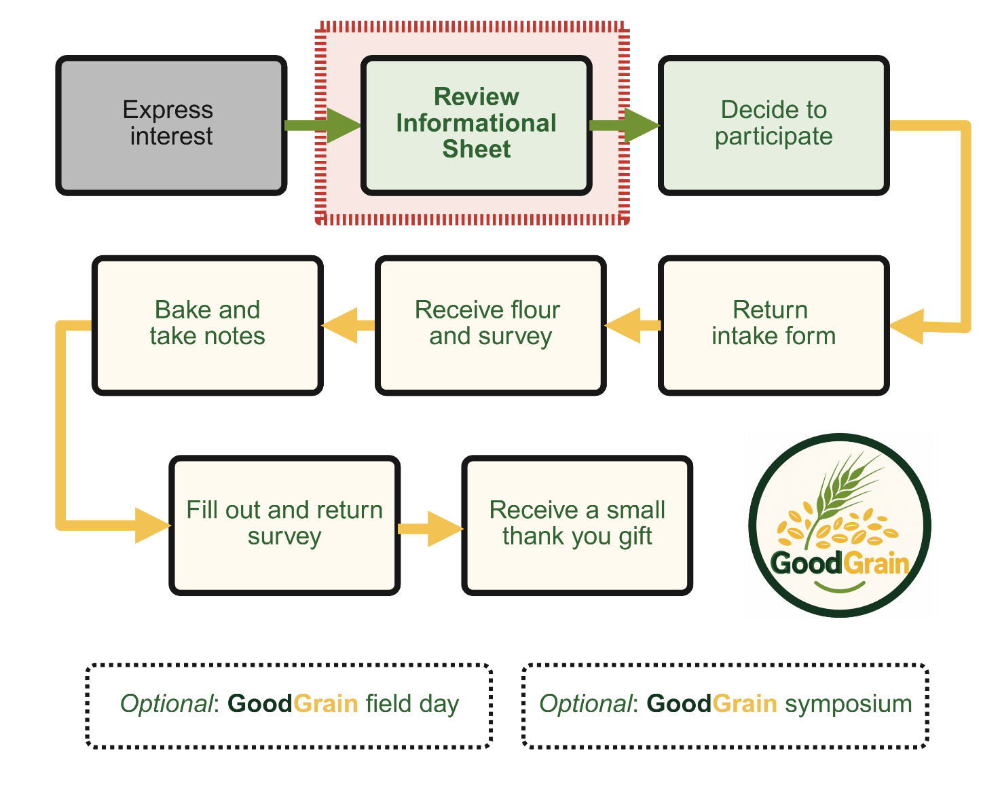
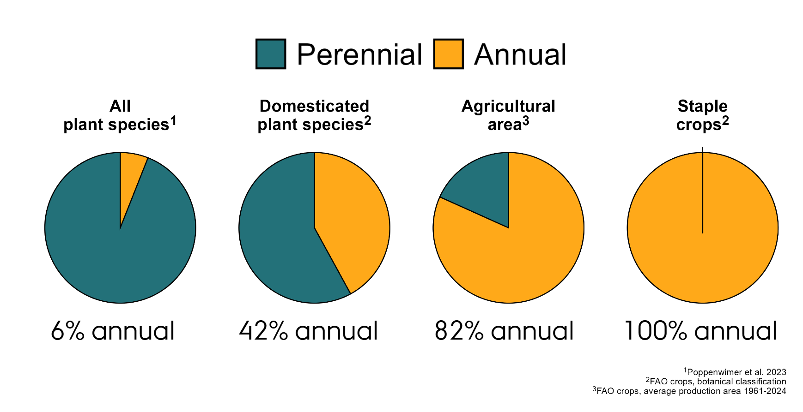
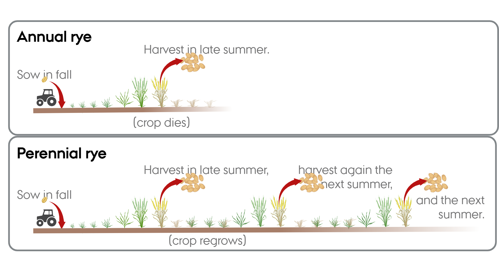

GoodGrain Home Baking Evaluation
Informational sheet in English
Introduction
If you are receiving this Informational Sheet, it means you have expressed interest in conducting a home baking evaluation using a new perennial variety of rye. Thank you! This sheet is meant to give you more in-depth information about this new variety, so you can decide if you would like to participate.

 This Informational Sheet is meant to aid you in your decision of whether or not to participate in the GoodGrain Home Baking Evaluation (steps circled in red). Attendance to the GoodGrain field day GoodGrain and symposium are optional, and are not required for participation in the Home Baking Evaluation.
This Informational Sheet is meant to aid you in your decision of whether or not to participate in the GoodGrain Home Baking Evaluation (steps circled in red). Attendance to the GoodGrain field day GoodGrain and symposium are optional, and are not required for participation in the Home Baking Evaluation.What happens next?
- Watch the [Informational Video — link to be added] (in English) and/or read this Informational Sheet in English or Danish.
- After watching the video and/or reading, if you decide you would like to participate in our research, complete the [intake form — link to be added].
An overview of the project
All of the crops we commonly use to make bread (for example wheat, oats, rye, barley) are annuals, meaning they are sown and produce one grain harvest, then must be sown again. If a crop could produce two or three grain harvests from one sowing, it would save the farmer a lot of work (and tractor driving), and by allowing the crop to remain in the field and develop more roots, it may also create better environmental outcomes. Recently, a few varieties of perennial grains have been developed, including a perennial rye grain. This new variety is being tested in the field to evaluate how it grows in Denmark, as well as how it impacts the environment as compared to an annual rye crop. The GoodGrain project is meant to build on that knowledge by looking specifically at the new perennial rye’s grain characteristics. One of those characteristics is its baking quality. It is important to the GoodGrain project to engage with our communities in this effort. You can read a bit more about the GoodGrain project here.
As a citizen scientist supporting this effort, you will be given approximately 1 kg of rye flour from this new perennial variety. You will need to purchase any additional ingredients you need to do your baking. You will be asked to take notes during your baking and use them to fill out a follow-up survey. Upon completion of the follow-up survey, you will be sent a small thank you gift (see Figure 1).
In the summer of 2027, the GoodGrain project will also host an event where you can see the perennial rye variety growing in the field in a test plot in Jutland. In the fall of 2027, there will be a public symposium in Copenhagen to share current knowledge about perennial rye with everyone across the value chain (researchers, breeders, farmers, millers, bakers, and bread eaters). The events are freely open to the public - we welcome you to attend, but it is optional.
Funding and project partners
This citizen science project is part of a NNF Plant2Food research project (Grant #NNF22SA0081019) being conducted at the Department of Agroecology and Department of Food Science at Aarhus University in Denmark in collaboration Wageningen University and Research in the Netherlands, and with Meyers, a prominent Danish food enterprise. As mentioned above, you can read a bit more about the GoodGrain project here.
Answers to some common questions
Is it safe to eat?
Yes. The grain used to make the flour you are receiving was tested at an independent laboratory to ensure it is safe for human consumption. You can access the lab results here: GoodGrain Lab Results (PDF).
Is this perennial rye variety genetically modified using new breeding technologies?
No, this variety was developed using traditional breeding methods, involving crossing plants by hand, and making selections based on their physical characteristics. You can read more about it in this scientific publication from 1986.
Is this grain organic?
No, Aarhus University does not have any organically certified land due to the costs and additional administrative complexity that would entail. However, this grain was grown without the use of pesticides.
Can I buy this flour somewhere?
Flour from this perennial rye variety is not currently available commercially. This project is laying the groundwork for a potential commercial release, and your help is appreciated!
For the curious
Broadly speaking, all plants fall roughly into two categories: perennial and annual. Perennial plants live for more than one year, while annual plants do not. In nature, perennial plants are very common. Think of a neighborhood park, or the forest: there will be trees, shrubs, maybe some grass. These are all perennial plants. In contrast, many of the plants in your kitchen garden are annuals, meaning you have to re-plant them every year (for example radishes, lettuce, or cucumbers). This general pattern of ‘perennials in nature, annuals in agriculture’ is actually seen at a global scale. And while we do have a lot of wonderful perennial crops (for example apples, avocados, and coffee!), the crops we use the most (and the ones we plant on the most land) are annuals, as you can see in this figure.

Are annual plants just superior to perennials for food production? Did humans deliberately choose to domesticate annual crops? Or was it just coincidence? These questions are currently being debated. However, regardless of how we got here, it is clear that having more perennials integrated into our agricultural land would be good for the environment. This is because perennials tend to offer benefits to the overall environment; they help put carbon into the soil, they provide soil cover year-round, and they use resources like water and nitrogen more efficiently. Creating perennial versions of our staple crops, like the perennial rye used in this project, is one way to get more perennials onto our agricultural land.
Societies have long recognized the potential benefits of a perennial grain. There have been efforts to breed perennial wheat in the Soviet Union since the 1930s! In the past, it has been a very difficult task, mainly because scientists had few tools to see what was going on inside the plant’s genetics. Despite these challenges, a few laboratories got lucky and had some successes, including one in Germany at the University of Hohenheim. There, in the 1960s, Dr. Reimann-Philips and his team successfully crossed an annual rye with a old perennial rye ancestor. The team tested the results, and made more selections. The resulting crop was perennial (Figure 3), and in the 1990s it was submitted to be considered as a variety in Germany.

The German government rejected the application, and it was never released as a variety. The breeders maintained some plots as their passion project, and while some of the material was later released as a wildlife forage crop, the perennial rye hasn’t gotten anyone’s full attention for the past thirty years. In 2023, Dr. Thomas Miedaner, who took over the University of Hohenheim’s rye breeding program after Dr. Reimann-Philips’ passing, shared some seeds of this crop with researchers at Aarhus University, who think the idea of a perennial rye has a lot of potential in Denmark!
In 2025 we tested the perennial rye side-by-side against a high-yielding annual rye. We were very impressed when it produced half of the grain yield of the modern annual rye, given that it was crossed with varieties from the 1960s! We think this variety deserves more development, and this grant is part of that effort. One of the goals of the grant is to understand how this new perennial rye performs in home kitchens, and to understand how people feel about eating a perennial grain.
How long would this crop continue to produce grain?
It has not been tested extensively at this point, but it seems the perennial rye reliably produces grain for at least two years. After this time weeds and diseases may become problems, but we need more research to determine the optimal way to manage the crop.